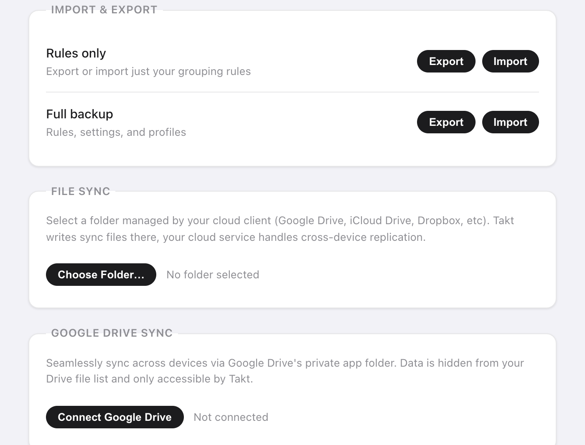

En bref : ouvrez la page d'options de Takt, allez dans Settings, et choisissez :
- Export d'un fichier JSON : les règles seules, ou une sauvegarde complète.
- File Sync : Takt écrit dans un dossier que Google Drive, Dropbox ou iCloud Drive synchronise pour vous.
- Drive Sync : Takt synchronise vers un dossier d'application caché de votre Google Drive, toutes les 15 minutes.
Les trois sont Premium. Aucune n'envoie vos données à un serveur de Takt.
Pourquoi mes groupes d'onglets Chrome ne se synchronisent-ils pas ?
La synchronisation des groupes d'onglets propre à Chrome déroute beaucoup de monde. Deux points posent problème :
- Elle exige que « Saved tab groups » (groupes d'onglets enregistrés) soit activé dans les paramètres de synchronisation de chaque appareil.
- Un groupe synchronisé arrive dans la barre de favoris. Il ne s'ouvre pas tout seul.
Si vous voulez seulement retrouver quelques groupes sur un second ordinateur, vérifiez d'abord ce réglage. C'est gratuit et intégré.
Takt résout un autre problème. Il ne synchronise pas vos onglets ouverts en direct. Il synchronise la configuration qui se trouve derrière : vos règles, vos profils, vos sessions enregistrées et vos onglets en hibernation. Vos règles recréent les mêmes groupes sur chaque ordinateur au fil de votre navigation. Une session enregistrée rouvre tout un espace de travail quand vous le demandez.
Comment sauvegarder mes onglets et mes règles dans un fichier ?
Dans Settings → Import & Export, vous trouvez deux lignes :
| Option | Fichier | Contenu |
|---|---|---|
| Rules only | takt-rules.json | Vos règles de regroupement |
| Full backup | takt-backup.json | Règles, paramètres, profils, sessions enregistrées et onglets en hibernation |
Utilisez Rules only pour partager un jeu de règles avec un collègue. Utilisez Full backup avant de réinstaller Chrome ou de passer à un nouvel ordinateur.
À l'import, les fichiers sont limités à 5 Mo. Les règles et les sessions s'ajoutent à celles que vous avez déjà, et celles qui portent un nom déjà utilisé sont ignorées. Une sauvegarde complète remplace aussi vos paramètres et vos profils par ceux du fichier.

Comment synchroniser via Dropbox, iCloud ou un dossier Google Drive ?
Utilisez File Sync. Takt écrit de simples fichiers JSON dans un dossier de votre choix. Votre client cloud les envoie comme n'importe quel autre fichier.
- Cliquez sur Choose Folder… et choisissez un dossier dans votre dossier Drive, Dropbox ou iCloud Drive, par exemple
Dropbox/Takt/. - Cliquez sur Sync Now. Takt écrit
rules.json,profiles.json,sessions.json,hibernated.jsonetmeta.json. - Cochez Auto-sync on every change pour réécrire les fichiers environ 2 secondes après votre dernière modification.
- Sur l'autre ordinateur, cliquez sur Import from Folder et choisissez le même dossier synchronisé.
Pas de connexion, et vous pouvez ouvrir et lire les fichiers. Tout service cloud doté d'un dossier sur l'ordinateur fonctionne.
La contrepartie : c'est à sens unique pour chaque ordinateur. Chaque ordinateur écrit sa propre copie, et vous récupérez les données d'un autre ordinateur avec Import from Folder. Si Chrome perd l'accès au dossier, Takt affiche un bouton Re-authorize.
Comment fonctionne la synchronisation Google Drive ?
Cliquez sur Connect Google Drive et connectez-vous une fois. Takt stocke ses fichiers dans le dossier d'application caché de Drive. Il est séparé de vos fichiers Drive et n'apparaît pas dans l'interface de Drive.
Takt ne demande que deux autorisations à Google :
- Données d'application Drive : lire et écrire dans un dossier que seul Takt peut voir. Il ne peut ni lister ni ouvrir vos autres fichiers.
- Adresse e-mail : pour indiquer quel compte est connecté.
Cochez Auto-sync every 15 minutes et Takt synchronise en arrière-plan. Sur un nouvel ordinateur, connectez le même compte et cliquez sur Force Pull pour remplacer ses règles, ses profils et ses sessions par la copie stockée sur Drive. Force Push fait l'inverse et écrase Drive. Les deux sont immédiats et ne peuvent pas être annulés depuis Takt.
Quelle méthode choisir ?
| Synchronisation des groupes d'onglets de Chrome | Export JSON | File Sync | Drive Sync | |
|---|---|---|---|---|
| Ce qui est transféré | Les groupes d'onglets enregistrés | Les règles, ou une sauvegarde complète | Règles, profils, sessions, onglets en hibernation | Règles, profils, sessions, onglets en hibernation, réglages d'hibernation |
| Automatique | Oui | Non | Écriture oui, import à la main | Toutes les 15 minutes |
| Cloud | Votre compte Google | Aucun | N'importe quel dossier synchronisé | Google Drive uniquement |
| Coût | Gratuit | Premium | Premium | Premium |
Un dernier détail : Takt conserve les règles, les paramètres et les profils dans le stockage synchronisé de Chrome, qui suit votre compte Chrome quand la synchronisation Chrome est activée. Les sessions et les onglets en hibernation restent en local : il leur faut donc l'une des méthodes ci-dessus.
Ce que la sauvegarde et la synchronisation ne font pas
- Pas de recopie des onglets en direct. Les onglets ouverts sur un ordinateur n'apparaissent pas sur un autre. Enregistrez une session et restaurez-la là-bas.
- La dernière écriture l'emporte. Les modifications faites en même temps sur deux ordinateurs ne sont pas fusionnées. Choisissez un ordinateur pour faire vos modifications, ou envoyez et récupérez délibérément.
- Drive Sync ne fonctionne qu'avec Google. Utilisez File Sync pour Dropbox, iCloud ou tout autre service.
Configurez une fois. Emportez votre configuration sur chaque ordinateur.
Ajouter Takt à Chrome, gratuitementQuestions fréquentes
Pourquoi mes groupes d'onglets Chrome ne se synchronisent-ils pas ?
Chrome exige que « Saved tab groups » (groupes d'onglets enregistrés) soit activé dans les paramètres de synchronisation de chaque appareil, et les groupes synchronisés apparaissent dans la barre de favoris au lieu de s'ouvrir tout seuls.
Takt synchronise-t-il mes onglets ouverts en direct entre ordinateurs ?
Non. Il synchronise vos règles, vos profils, vos sessions enregistrées et vos onglets en hibernation. Les règles recréent les mêmes groupes sur chaque ordinateur, et une session enregistrée rouvre tout un espace de travail.
Takt peut-il lire mes fichiers Google Drive ?
Non. Drive Sync n'utilise que le périmètre « données d'application », un dossier caché que seul Takt peut voir, plus votre e-mail pour indiquer le compte connecté. Voir comment Takt garde vos données en local.
La sauvegarde et la synchronisation sont-elles gratuites ?
Non. L'export et l'import JSON, File Sync et Drive Sync font partie de Premium, à 3 $/mois ou 30 $/an.